Overview
This tutorial will guide you through the transition editing in the mannequin editor. It uses samples that are part of the SDK. Feel free to follow along with the step by step instructions.
A prerequisite for this tutorial is that you know how to open the editor and a preview file, create & edit fragments, add tags and create preview sequences. See the previous tutorials: Mannequin Editor Tutorial 1 - Preview Setup, Fragments and Saving and Mannequin Editor Tutorial 2 - Tags & Previewing.
The tutorial will use a lot of pictures and a simple color code to distinguish areas to interact with and areas to look at:

Transitions
Load up the preview file for the third tutorial, it is called "sdk_tutorial3preview.xml". See Loading the Preview File (but this time the file is called "sdk_tutorial3preview.xml"). If the file manager pops up you can press "Undo Changes to Selected Files" to ignore your previous changes.
Tutorial3 picks up from the end of tutorial2: you will notice that a small number of fragments with tags are already created for you.
We will now show how to set up a Transition between different fragments and where to find these transitions.
At any time in the tutorial feel free to play the current sequence using the playback controls.
Creating a New Transition (from the Transition Picker)
In this example we will create a special transition between the "Idle (standing)" and "Idle (kneeling)" fragments. Without the transition the character just snaps between the two fragments (using the default blend-in time which you specified at the beginning of the "Idle (kneeling)" fragment).
- Select the
Transitions panel (also called Transition Browser) from the left side of the CryMannequin editor. - Notice that there are no transitions yet.
- Press the "New..." button.
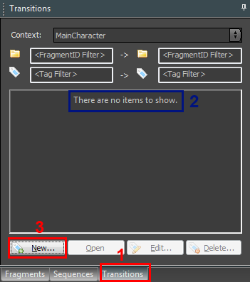
Now we need to select the fragments & tags in between which we want to create a transition.
- Select the "Idle" FragmentID in the From field.
- Select the "Idle" FragmentID in the To field.
- Select the "standing" tag for the 'from' stance field.
- Select the "kneeling" tag for the 'to' stance field. Leave the tired tag unchecked, as we do not care about it.
- Press OK
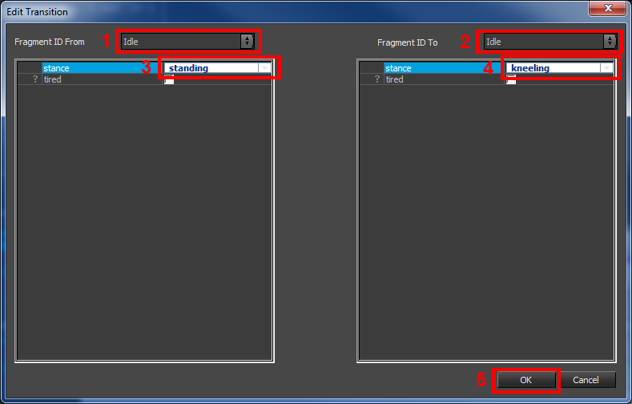
You can create a more general transition by leaving fields blank. For example say you'd like a transition from Idle (kneeling) to any other fragment, you would leave the "To" FragmentID field blank. Similarly, if you keep all tags unchecked it means you don't care about which tags are set.
Opening a Transition
The transition we just created opened up automatically.
- The currently opened transition is displayed in bold in the transition browser.
- You can open another transition at any time by selecting it and either double clicking on it or pressing the Open button.
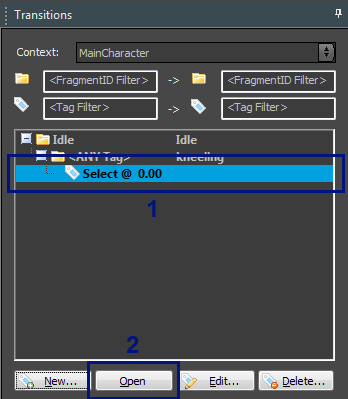
In this simple example we created a specific transition, from a specific fragment to another specific fragment. In cases where a more general transition is set up (for example without specifying tags, or without a from/to fragmentID), the Transition Picker will pop open.
Using this window we need to tell the system which specific fragments we want to show as "From" and "To" fragments. This is because without specifying an example From or To fragment we cannot give a decent preview. The window looks very similar to the Edit Transition window:
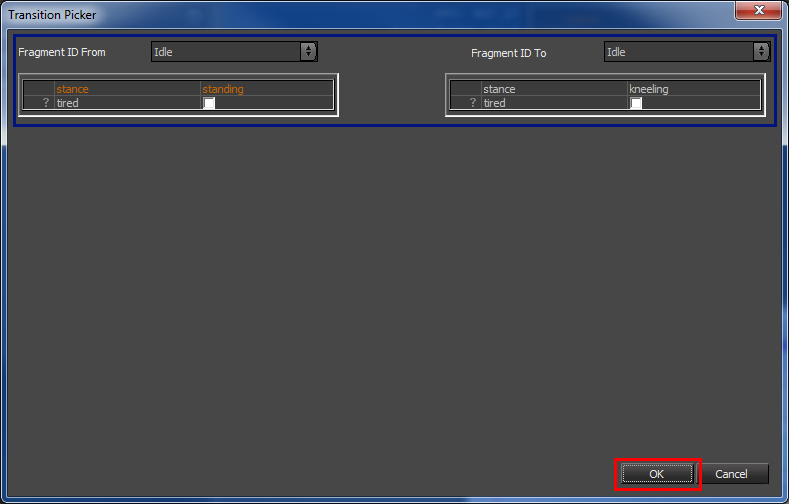
The transition we just created shows up in the Transition Editor on the right.
- A mini sequence is set up automatically that first starts the "Idle (standing)" fragment (which we picked in the transition picker before)...
- ...and that subsequently starts "Idle (kneeling).
- An orange box appears on the FragmentId track that shows you the 'transition' region. By default it just uses the blend-in time we set up in the "Idle (kneeling)" fragment.
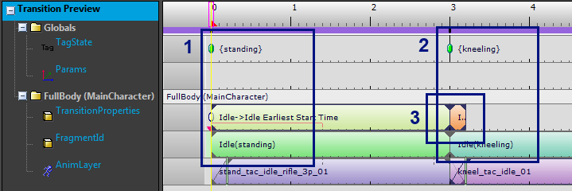
Changing a Transition
To get a better idea where this default transition time comes from let's open up the "Idle (kneeling)" fragment in the fragment editor by right-clicking on it to open up the context menu and then selecting "Edit Fragment".
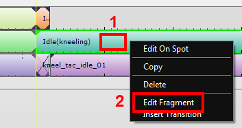
This automatically opens up the selected fragment inside the Mannequin Fragment Editor.
- As before, the name of the FragmentID is displayed in the colored area.
- The default blend-in time is specified by this area.
- Which is also specified here in the properties of this animation clip.
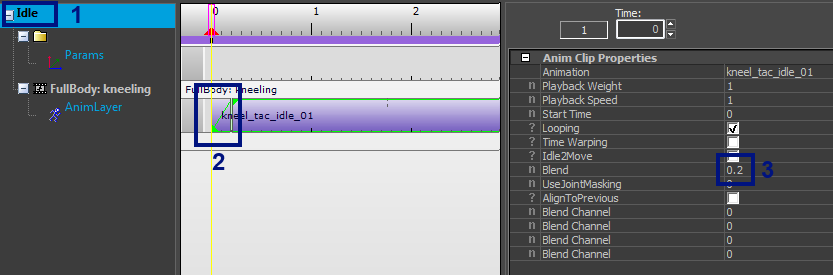
Now by making a transition we can override this default, which is why we created this specific transition in the first place.
- Let's go back to the Transition Editor.
- Make the transition period bigger by dragging vertical divider to the right:
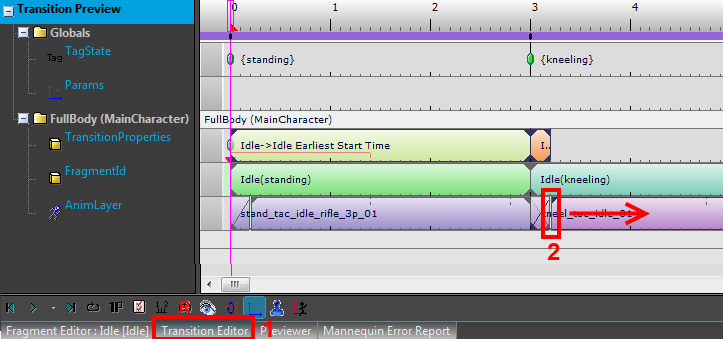
What did we do now? By dragging this divider we override the default blend-in time which we saw above (if you flip to the Fragment Editor at this very moment you will see that the blend-in time in the actual fragment is still the small one we had before). So whenever the game requests this specific sequence of fragments the new blend-in time we just specified will be used instead.
Let's now try to use a specific transition animation instead of a pure blend. We need to insert this animation somewhere after the beginning of the transition period (as doing something special before the transition even started does not make sense) - so we first need to move the second animation a bit to the right to make space for the transition animation.
Drag the second clip to the right:
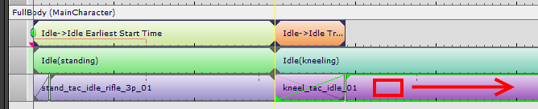
Double-click somewhere after the beginning of the orange Idle->Idle block to create a "None" animation clip:
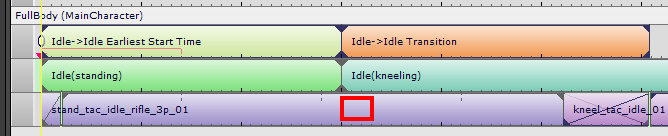
- Select the None clip
- Start selecting an animation for this new clip.
- Type to_kn in the filter as we happen to know this is part of the name.
- Open up the "stand" section.
- Double-click on the stand_tac_to_kneel_01 animation to select it into the animation clip.
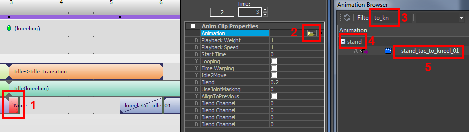
Now move the second clip and its blend-in time around until you get something like this, where the blend-in of the second clip overlaps with the end of the transition clip.
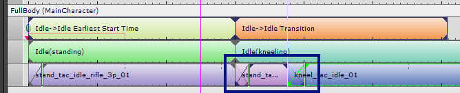
Congratulations, you set up your first transition!
Creating a New Transition (from the Previewer)
There is another way to create transitions which is good to know about: you can create them directly from the Previewer, you don't need to go to the Transition Picker.
Let's use this other method to set up the transition to stand up again from kneeling pose.
- Open up the previewer
- Make sure you have the Fragments browser opened too
- Drag the "Idle (kneeling)" fragment onto the previewer
- Then drag the "Idle (standing)" fragment after it the kneeling fragment
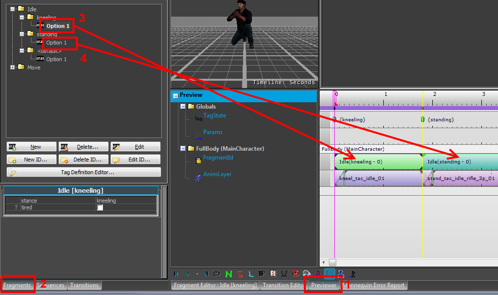
Then:
- Right-click on the "Idle (standing - 0)" key.
- Select "Insert Transition".
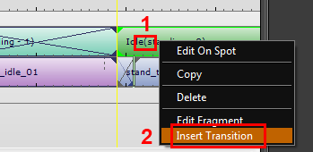
A Create Transition window pops up. It will automatically fill in parameters to create a transition from the previous fragment to the currently selected one. In our case the automatically created settings are fine, so we just press the "Create" button:
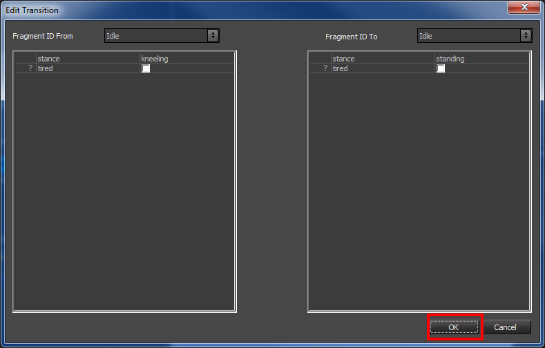
This creates and opens up the transition in the transition browser/editor:
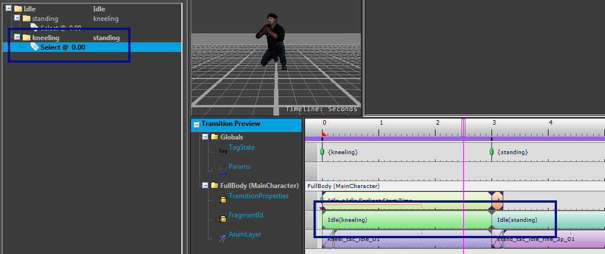
Using the same steps as before, go ahead and try to create the transition to go from kneeling to standing yourself:
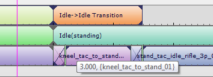
And there you go, second transition created!
Transition Picker Filters
In the transition picker you can look for transitions by specifying part of the name of either the FragmentIDs or the tags involved:
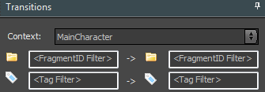
Transitions To and From Anything
As a side note, when you do not specify a From or To fragmentID the transition shows up as respectively an "<Any> to" or "to <Any>" transition (these are sometimes also called "Into" and "Exit" transitions).
In the example below we have:
- A transition from anything to Idle.
- That one shows up with "<Any> to Idle" (note that even if there is nothing before the Idle fragmentID it still shows up; coming from nothing also counts as 'anything').
- A transition from Idle to anything.
- That one shows up with "Idle to <Any>" (in this example we set up going from "Idle" to "Move").
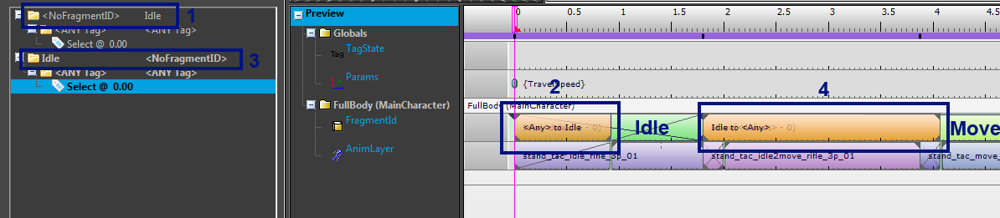
When you set up a sequence that has both a transition from the first and a transition to the second fragment in a sequence, both will play. So if you set up a sequence with two Idle clips in the previous example, you get the following:
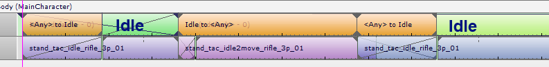
Earliest Start Time - Delaying a Transition
As we saw in the section on trumping, sometimes a transition gets delayed to the end of the previous fragment. This is the default behavior if the previous fragment is not looping. Typically you want to start the new fragment a little bit before the previous one ended though. If we want to do this we need to create a CryMannequin transition and next move the "orange block" to the point where we want it to be. This changes what is called the Earliest Start Time. This can be hard to envision, so let's work on an example.
First we need to prepare a fragment that is not looping. Let's simply change our "Idle (standing)" fragment:
- Go to the fragments browser
- Open the "Idle (standing)" fragment
- Select the first key
- Change it to be not looping
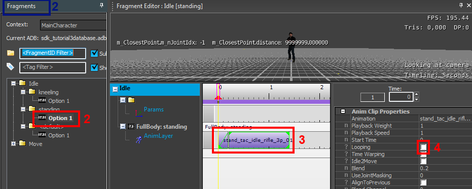
Let's now make a simple (contrived) example starting from a transition from this "Idle (standing)" to another "Idle (standing)". This also shows that you can make transitions where From & To are the same fragment.
Make the transition:
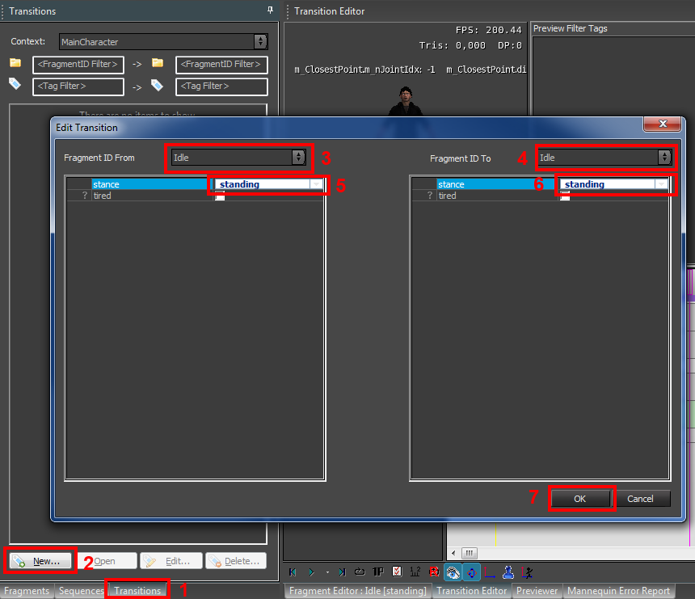
The transition should open automatically and it should look like this:
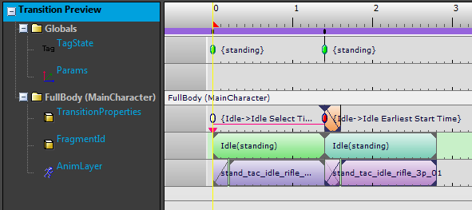
It's not immediately apparent, but if you move the "Idle (standing)" fragmentId to the left you will see that the transition itself is delayed:
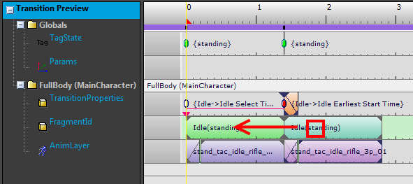
This is the result:
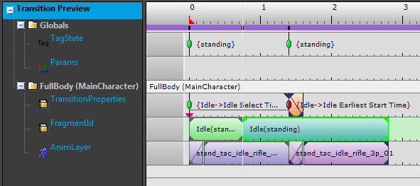
Notice how the second animation only starts after the first is finished, not immediately when we request it.
As before, this is because the default transition behavior when coming from a non-looping fragment is to wait until the end of the fragment.
Now we want to actually start the transition earlier, so we move the "earliest start time" key on the TransitionProperties track a bit back in time:
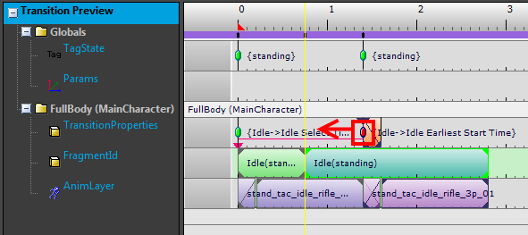
And the result is that the transition starts earlier:
- You can set it up so the blend-in time of the second clip ends before the end of the first clip, which is what you typically want to do.
- You can edit the earliest start time manually in the transition properties (to get to these properties, select any key on the TransitionProperties track).
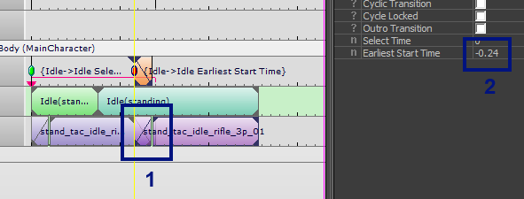
The Earliest Start Time is stored as a value relative to the end of the previous fragment, which is why it is -0.24 in the previous example. In the advanced section on Cyclic Transitions we see an exception to this though.
Transition Select Time - Picking Different Transitions Based on Time
Sometimes you would like to select a different transition based on where you are in the previous fragment. For example you typically have a different "walk to idle" transition based on which part of the walk cycle you are in. To do this in CryMannequin you can create multiple transitions, each with a different "Select Time".
Here is an example of how this could look:
- There are 2 transitions. One has a select time of 0.00 (seconds) and the other a select time of 0.50. This means the first transition will only be selected when the previous fragment is at a time between 0.00 and 0.50. The second transition is only selected when the time is at or after 0.5.
- The select time for the currently opened transition is displayed as a key with a triangle beneath it; in the example the transition with select time 0.50 is opened up; the key is called "Idle->Move Select Time" in the example.
- The select time is also displayed in the transition properties.
- If there are multiple transitions available, the other select times are displayed as triangles too. In this case there is a triangle at time 0.
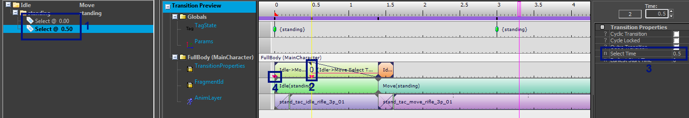
Advanced Transition Properties
Cyclic Transition
If you need to set up a transition coming from a looping (or parametric) animation, you might want to treat the Transition Select Time relative to one cycle (or segment) of the animation clip. If the fragment changes duration (possibly even at runtime for a parametric animation), the select time would automatically adjust in the proper proportion.
You do this by selecting Cyclic in the transition properties. This turns the select time into a number between 0 and 1 instead of a number in seconds.
Here is an example:
- Notice that the first fragment loops.
- We selected Cyclic Transition in the Transition Properties (as before, you access these properties by selecting any key on the Transition Properties track).
- The select time is 0.5, and this translates into 50% along the cycle. The UI also displays the range of the select time, in this case it runs all the way to the end of the cycle. After that the other transition, the one with select time 0, will be selected. And so on.
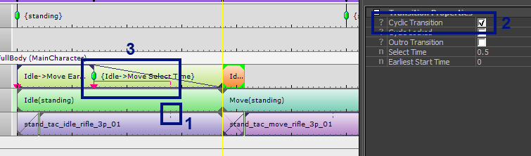
Unless marked as locked (see next), cyclic transitions will always trump the previous fragment, regardless of action priority. The Earliest Start Time is thus effectively ignored. See Mannequin Trumping for more details.
Cyclic Locked Transition
We saw that it is possible to delay transitions to a certain point in the animation in the section on the Earliest Start Time. By default this 'earliest start time' is relative to the end of the previous fragment; but this doesn't work when the fragment you are coming from has no clear ending, for example when it ends with a looping clip. You might want to set up a transition that comes from a run cycle and you only want to trigger this transition when the preceding animation is in the second half of the run cycle. To make this work you need to check both the Cyclic Transition and Cyclic Locked flag. From then on the earliest start time is stored in a 'cyclic' way: the time restarts at 0 after each cycle.
Outro Transition
Outro transitions are deprecated and will be removed in a future release of the engine. We instead recommend that you use a dedicated intermediate fragment in the situations where you might have used an outro transition.
In many cases a transition to <Any> (see Transitions To and From Anything) in a certain sense 'belongs' to the source fragment. For example transition from "Look Around Using Binoculars" to anything might stow the binoculars and go back to a normal idling pose. To the game code it might be useful to treat the stowing of the binoculars as part of the action that is "using binoculars" instead of as a part of the next action. If programmers ask for this, you will have to mark these kinds of transitions as "Outro". This won't change the behavior in the editor, but it will change the behavior of game code.
Outro transitions will be in a sense appended to the previous fragment. When they play the previous action will not be exited but IAction::OnTransitionOutStarted() will be called. Also, IAction::IsTransitioningOut() will return true while the Outro Transition is playing.